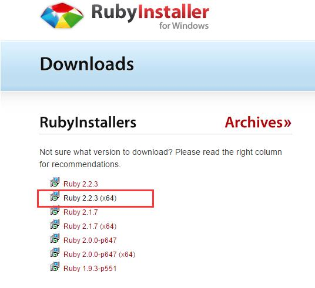
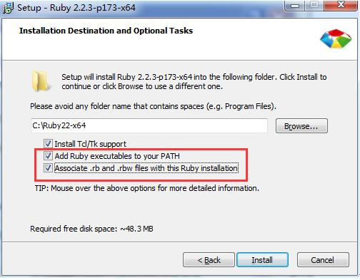
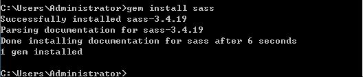
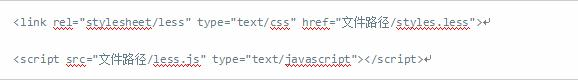
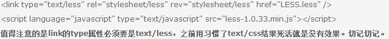
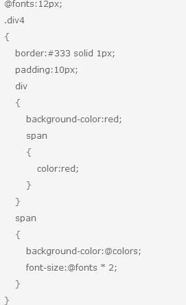
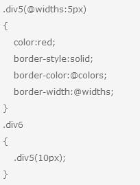

分享人：张雪飞
目录
1.背景介绍
2.知识剖析
3.常见问题
4.解决方案
5.编码实战
6.扩展思考
7.参考文献
8.更多讨论
CSS 是一门非程序式语言，没有变量、函数、SCOPE（作用域），需要书写大量看似没有逻辑的代码，不方便维护及扩 展，不利于复用，尤其对于非前端开发工程师来讲，往往会因为缺少 CSS 编写经验而很难写出组织良好且易于维护的 CSS 代码。
知识点1：Sass背景介绍
Sass是对CSS（层叠样式表）的语法的一种扩充，诞生于2007年，最早也是最成熟的一款CSS预处理器语言，它 可以使用变量、常量、嵌套、混 入、函数等功能，可以更有效有弹性的写出CSS。Sass最后还是会编译出合法 的CSS让浏览器使用，也就是说它本身的语法并不太容易让浏览器识别，因为 它不是标准的CSS格式，在它的 语法内部可以使用动态变量等，所以它更像一种极简单的动态语言。 其实现在的Sass已经有了两套语法规则：一个依旧是用缩进作为分隔符来区分代码块的；另一套规则和CSS一 样采用了大括号（｛｝）作为分隔符。后一种语法规则又名SCSS，在Sass3之后的版本都支持这种语法规则。
Sass（Syntactically Awesome Style Sheets）是一个相对新的编程语言，Sass为web前端开发而生，可以用它来定 义一套新的语法规则和函数，以加强和提升CSS。通过这种新的编程语言，你可以使用最高效的方式，以少量的代 码创建复杂的设计。它改进并增强了CSS的能力，增加了变量，局部和函数这些特性。而这只使Sass一部分利器！
SASS是Ruby语言写的，但是两者的语法没有关系。不懂Ruby，照样使用。只是必须先安装Ruby，然后再安装SASS。
界面如下所示：
在系统上运行来安装Ruby。添加Ruby的bin文件夹到PATH用户变量和系统变量以使用 gem 命令工作。
在系统中打开命令提示符，然后输入以下命令行
gem source -a http://rubygems.org/
gem sources -a http://ruby.taobao.org/
gem install sass
看到屏幕下方SASS 安装成功提示(国内线路不稳定，需要多试几次)。
文件明后缀
sass有两种后缀名文件：一种后缀名为sass，不使用大括号和分号；另一种就是我们这里使用的scss文件，这种和 我们平时写的css文件格式差不多，使用大括号和分号。而本教程中所说的所有sass文件都指后缀名为scss的文件。 在此也建议使用后缀名为scss的文件，以避免sass后缀名的严格格式要求报错。
导入
sass的导入(@import)规则和CSS的有所不同，编译时会将@import的scss文件合并进来只生成一个CSS文件。但是如 果你在sass文件中导入css文件如@import 'reset.css'，那效果跟普通CSS导入样式文件一样，导入的css文件不会 合并到编译后的文件中，而是以@import方式存在。 所有的sass导入文件都可以忽略后缀名.scss。一般来说基础的文件命名方法以_开头，如_mixin.scss。这种文件在 导入的时候可以不写下划线，可写成@import "mixin"
知识点3：LESS的背景介绍
（2009年开源的一个项目，受Sass的影响较大，但又使用CSS的语法，让大部分开发者和设计师更容易上手。LESS提供了 多种方式能平滑的将写好的代码转化成标准的CSS代码。
知识点3：LESS的介绍
第一个，less是单独的一种文件，可以理解为css的升级版，完全按照css写也没问题，不过它提供了很多便利的东 西，可以省好多代码量。第二个，html只认css,所以需要配套一些软件将less解析成css,引用时候，直接引用css 就好。gulp,koala 都是常用的，Koala好像简单且方便一点。 多种方式能平滑的将写好的代码转化成标准的CSS代码。
LESS的安装
LESS的安装和Sass安装有所不同，他不需要依赖于Ruby环境，就能直接安装使用。不过LESS安装分为两种：客户端和 服务器端安装
less客户端安装
我们可以直接在客户端使用“.less”（LESS源文件），只需要在官网载一个Javascript脚本文件主“less.js”，然后 在我们需要引入LESS源文件的HTML的
中加入如下代码 需要注意的是：在引入“.less”文件中，“link”的“rel”属性要设置为“stylesheet/less”。还有更重要的一 点需要注意的是：LESS源文件一定要在“less.js”引入之前引入，这样才能保证LESS源文件正确编译解析。
less的使用
使用less，css文件的后缀名需要改为.less
在html页面中加入下面代码
3.嵌套规则
这样样式的名称更为的简短，并且修改的时候好找一些
4.样式的运算
代码见嵌套规则代码中的最后一个span标签的font-size属性。 好处类似于定义变量的好处。
5.样式传参
Sass的安装需要Ruby环境，是在服务端处理的，而Less是需要引入less.js来处理Less代码输出css到浏览器，也可 以在开发环节使用Less，然后编译成css文件，直接放到项目中，也有 Less.app、SimpleLess、CodeKit.app这样 的工具，也有在线编译地址。
输出样式的风格可以有四种选择，默认为nested
nested：嵌套缩进的css代码
expanded：展开的多行css代码
compact：简洁格式的css代码
compressed：压缩后的css代码
scss引用的外部文件命名必须以_开头, 如下例所示:其中_test1.scss、_test2.scss、_test3.scss文件分别设置 的h1 h2 h3。文件名如果以下划线_开头的话，Sass会认为该文件是一个引用文件，不会将其编译为css文件.
Sass有工具库Compass, 简单说，Sass和Compass的关系有点像Javascript和jQuery的关系,Compass是Sass的工具库。 在它的基础上，封装了一系列有用的模块和模板，补充强化了Sass的功能。 Less有UI组件库Bootstrap,Bootstrap是web前端开发中一个比较有名的前端UI组件库，Bootstrap的样式文件部分 源码就是采用Less语法编写。
问题一：你 使用的是sass还是less？
问题二：为什么使用sass或者less>
参考一：SASS入门教程及用法指南
参考二：深入理解CSS块级(block)元素和内联(inline)元素
参考三：初步认识 LESS
参考四：sass、less和stylus的安装使用和入门实践
参考五：sass语法
参考六：less的一些用法整理
参考七：LESS使用简介
感谢大家观看
BY :张雪飞 师兄 :刘齐勇